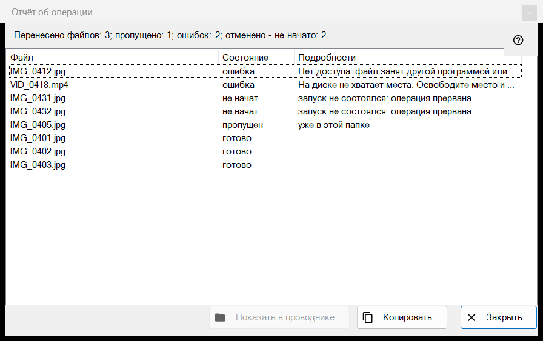
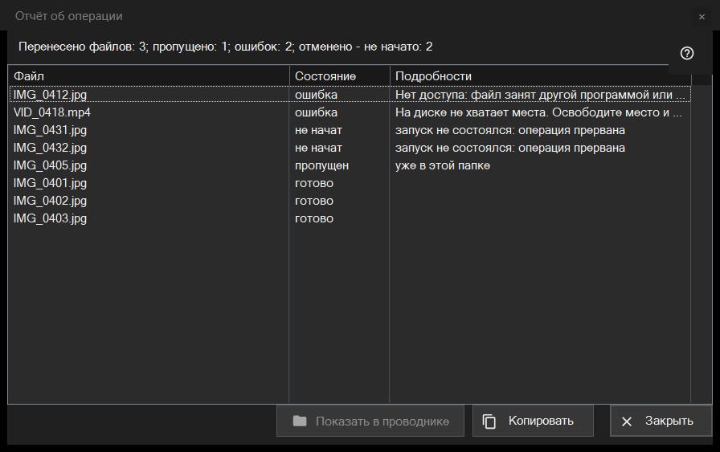

Отчёт об операции
Назначение
Перечисляет, что произошло с каждым файлом последней пакетной операции (перенос, копирование, удаление или возврат), и почему что-то пропущено или не удалось. Сам он не открывается: после операции щёлкните строку отчёта внизу панели миниатюр (F3). Если операция прошла не чисто, строка заканчивается словами «нажмите, чтобы увидеть подробности».


Порядок действий
- Выполните операцию над несколькими файлами в панели миниатюр.
- Прочитайте итоговую строку внизу панели.
- Щёлкните её, чтобы открыть это окно.
- Смотрите верх списка: сначала идут ошибки.
- Выделите строки и нажмите «Копировать», чтобы взять их пути, или «Показать в проводнике», чтобы найти файл.
Элементы окна
Итоговая строка
Строка начинается с результата: «Перенесено файлов: 5», «Скопировано файлов: 5», «Удалено файлов: 5», «Возвращено файлов: 5» или «Выполнено операций: 5». Остальные части с числом появляются, только когда оно не нулевое: «пропущено», «ошибок», «операций без отмены», «удалено безвозвратно, вернуть нельзя» и, если операция остановилась раньше, «прервано, нет связи с папкой - не начато» (останавливают три сбоя связи подряд) или «отменено - не начато».
Список
Столбцы: «Файл», «Состояние» и «Подробности». Самые важные строки идут первыми: ошибки, затем не начатые, затем пропущенные, затем выполненные; внутри группы файлы идут в порядке операции. Подсказка строки показывает полный путь. В «Подробностях» - понятная причина сбоя, папка назначения для выполненного файла, «сохранён как» и новое имя, если прежнее было занято, и «Удалено безвозвратно - отмена недоступна» для удаления мимо Корзины.
Состояния и причины пропуска
Состояния: «готово», «ошибка», «пропущен», «не начат». Пропущенный файл называет причину: «уже в этой папке», «файла уже нет на диске», «внутри архива файлы не изменяются», «то же имя уже есть среди выбранных файлов», «ресурс доступен только для чтения», «это тот же самый файл» или «имя уже занято в папке назначения». Не начатый файл сообщает «запуск не состоялся: операция прервана».
Показать в проводнике, Копировать, Закрыть
«Показать в проводнике» доступна при выбранной строке; она открывает окно папки с выделенным первым из выбранных файлов либо саму папку, если файл уже перенесён. «Копировать» (и Ctrl+C) кладёт в буфер полные пути выбранных строк по одному на строку, а если ничего не выбрано - всех строк: так удобно передать список проблемных файлов. «Закрыть» завершает отчёт.